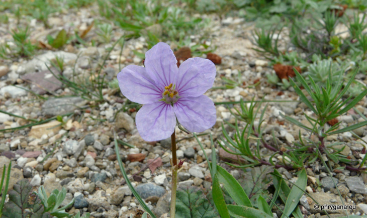
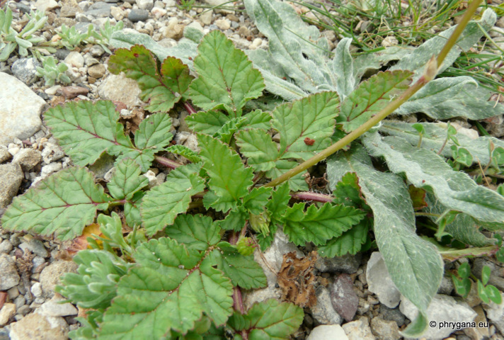
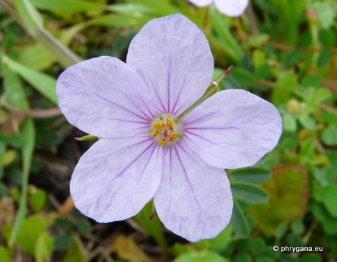
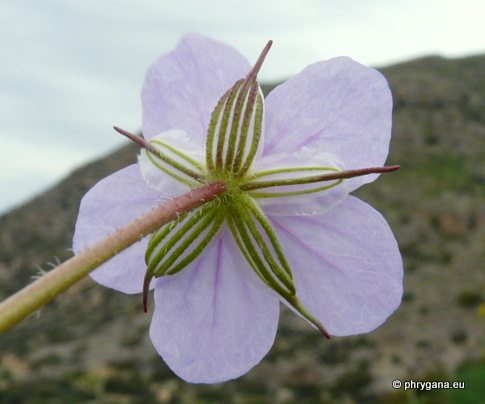
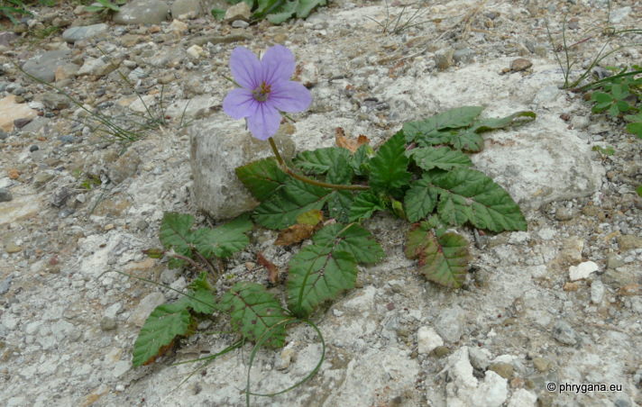
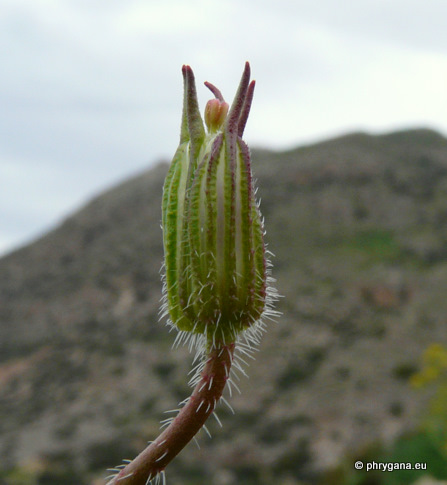
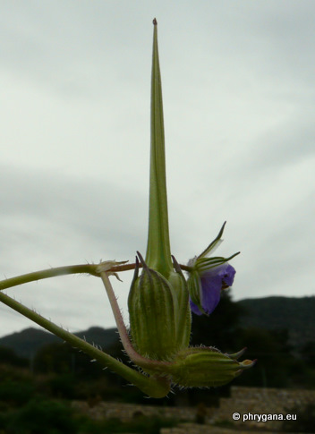
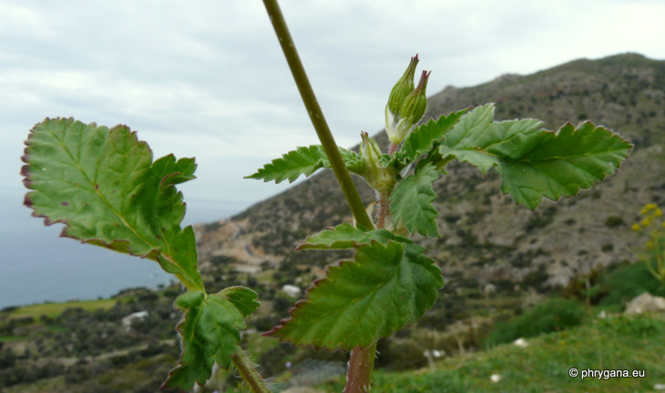

| PHRYGANA | Fauna | Flora | Galles | liste des espèces |
contact -
info - commentaires phrygana1 (at) gmail.com |
| Particularités crétoises | nouveautés | Mines | ressources naturelles |
| Erodium gruinum (L.) L'HÉR. |
| 243 | Flora | GERANIACEAE | Erodium L' HÉR. |
 Erodium gruinum Melambes (Agios Giorgos) 17 mars 2011 |
| Long-beaked Stork's Bill | |
| Plante poilue | |
| Feuilles: oblongues, à lobes profonds et dentés | |
| Tiges: assez fortes, couchées-ascendantes, poilues. | |
| Fleurs: pétales (10 à 14 mm) bleu violet avec des veines rouge carmin; calice 15 à 20 mm; pédicelle sans poils glanduleux; sépales blanchâtres à côtes vertes | |
| Fruits: long de 12 - 15 mm; bec très long 65 - 110 mm; graines longues de 0,3 à 0,4 mm. | |
| Hauteur: 15 - 45 cm | Type biologique: thérophyte ramifié |
| Floraison: mars avril mai | |
| Altitudes: 0 - 1200 m | |
| Statut en Crète: indigène - native | |
| Biotopes en Crète: olivaies, fonds des gorges, lisières, collines caillouteuses, vieux murs | |
| Distribution: région Méditerranéenne orientale (Grèce, Turquie, Proche-Orient, Libye, Égypte) | |
|
 Erodium gruinum Melambes (Agios Giorgos) 17 mars 2011 |
|

 Erodium gruinum Melambes (Agios Giorgos) 17 mars 2011 |
|
 Erodium gruinum Melambes (Agios Giorgos) 17 mars 2011 |
|

 Erodium gruinum Melambes (Agios Giorgos) 17 mars 2011 |
|
 Erodium gruinum Melambes (Agios Giorgos) 17 mars 2011 |
| 07 juin 2012 |
| © paul fontaine -- © Phrygana.eu 2007 -- 2013 |